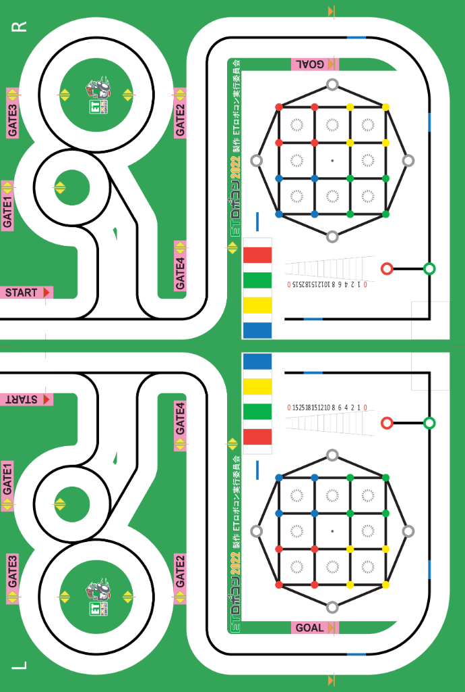

画像から座標取得
使い方
原点からの相対座標の求め方
- 画像の実際の横幅と縦幅を入力する(初期値はX = 275.10cm Y = 183.00cm)
- 「スケール変更」ボタンをクリックするとスケールが変更される
- 画像をクリックして原点を決める
- 画像の上でカーソルを動かすと原点からの相対座標が自動で変化する
- リセットするときは「原点を初期化」ボタンを押すと原点が画像の左端になる
距離の求め方
- 原点からの相対座標の求め方の1、2の手順を行う
- クリックするごとに前回クリックした位置から距離が加算されていく
- 2点間の距離合計が更新される
- 2点間の距離合計を初期化したい時は「2点間の距離合計を初期化」ボタンをクリックすると0で初期化される
現在設定中の横幅:366.00cm 縦幅543.00cm
原点からの相対座標x軸：-cm Y軸：-cm

画像サイズ：縦幅-px 横幅-px